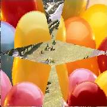

Swing
B (second) clip swings in or the A clip swings out as doors
hinged at corners, thereby fully revealing or assembling the B Clip.
The number of doors can be one (single door attached at the selected corner
swings out or in), two (twin doors hinged at opposite corners swing) and
four (4 doors each at a corner swing). If desired direction of swing can be reversed by setting parameter dir to false.
All avisynth+ color formats supported. Thread safe..
Details of parameters
| Description |
Name |
Type |
Limits |
Default |
| A clip |
|
clip |
|
none |
| B clip |
|
clip |
|
none |
| Overlapping time in seconds |
|
float |
not more than clip length , must result in >2 frames. |
none |
| doors swing out or swing in?? |
out |
boolean |
true or false |
true |
| number of doors |
ndoors |
integer |
1, 2 or 4 |
2 |
| corner number hinged |
corner |
integer |
1 to 4 |
1 |
| direction of swing |
dir |
boolean |
true or false |
true |
#Usage examples:-
Swing(A, B,4,false,4,3)
Swing(A, B,3)
Swing(A, B,3.5,ndoors=4)
Swing(A, B,4,corner=3)
Images during ition with ndoors=4, out=true option:
|  |
 |
 |